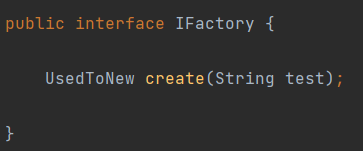
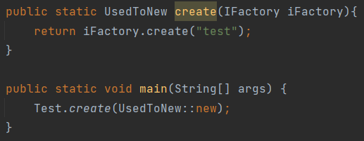

记录
首先是Block的依赖树：

右上角那两个以及左上一个已经在之前提到了，现在就看看剩下的几个
BlockBehaviour
与Item相似，这个类中也有许多的Block属性比如声音效果，摩擦力等，其构造采用了BlockBehaviour.Properties，因此最好能了解这里面代表的含义

这张图片给出的是Properties中的copy，这里面没有复制一个参数叫JumpFactor，只有在蜂蜜快中修改了这个参数。算是一个潜在的bug?
- material：属于哪个材质，之后给出Maaterial类阅读
- destroyTime：摧毁的时间
- explosionResistance：爆炸抗性，应该是对比如苦力怕或tnt爆炸的抗性
- hasCollision：是否有碰撞
- isRandomlyTicking：是否受随机刻的影响，如小麦，胡萝卜等农作物
- lightEmission：光的衰减程度
- materialColor：材质的颜色，看其源码应该为计算不同光亮下方块的总体颜色（？）
- soundType：声音类型，应该是走在上面发出的声音等
- friction：摩擦力
- speedFactor：速度，如灵魂沙，蜂蜜块等。
- dynamicShape：多种形态..不太清楚，Blocks使用该属性的有以下方块：移动的活塞，细雪，滴水钟乳石，脚手架（貌似），推测是为了播放动画？
- canOcclude：推测是能否阻挡光线
- isAir：是否是空气
- requiresCorrectToolFroDrops：是否需要正确的工具才会掉落
Material

- color：材质颜色，之前提到过
- pushReaction：被推的时候是什么反应，推测为被活塞推

- solid：是否是固体
- liquid：是否是液体
- solidBlocking：推测是是否是坚固的方块，参考冰，玻璃，末地传送门等将此设为了false
- replaceable：是否能被替换，比如岩浆你可以直接拿方块右击放置方块
- flammable：是否能被点燃，参考羊毛，树叶，木头等设置此项为true
- blockMotion：是否能阻挡，参考岩浆，细雪等设置此项为false
IForgeBlock
这个接口主要也是定义了一些方法，方块可以重写这些方法，比如是否为梯子，是否能被实体破坏，凋零末影龙等，以及是否能被红石链接，在这里就不放了
善用IDEA的联想功能
Block
内含其它的方法，比如stepOn，走在方块上时触发的方法，比如红石矿，走在上面会发亮，fallOn，实体掉在这个方块上，以及其他方法，也不叙述了。
其他
BlockState

在BlockState与StateHolder中间还有一层，在BlockBehaviour类中的BlockStateBase
BlockState自己的东西很少，直接截图可以截下来

参考：https://minecraft.fandom.com/wiki/Block_states

IForgeBlockState
还是定义了一些方法，里面跟IForgeBlock相似，是否为梯子那些的方法在里面同样存在
StateHolder
推测为具体存储一个方块的某些信息，比如在竹子中调用了其中的setValue这个方法设置了年龄AGE为0或1
内含四个变量：

- owner：存储的是归属的方块Block
- values：存储的是方块的属性
- neighbours：存储的是某个方块的所有状态，日后使用setValue时其实是从这里面找
- propertiesCodec：推测是将properties序列化（需要确认）
有趣的东西
在看BlockState的方法时看到了一个有趣的东西，以前没见过，记录一下
在BlockState的构造方法中，其传参为

在看调用这个构造方法的时候，发现是这样使用的:

builder.create调用的是

其中的Factory：

可以看到，这个interface中的函数与BlockState的构造方法基本相似（S可以认为是BlockState，O是Block）等于是在这一步将构造方法转成了一个接口？
随后自己写了个测试来验证
总共有两个类，一个接口
- 接口IFactory

- Test

- UsedToNew

通过运行Test中的main方法，可以发现控制台输出了test

emmm只能说学到了..